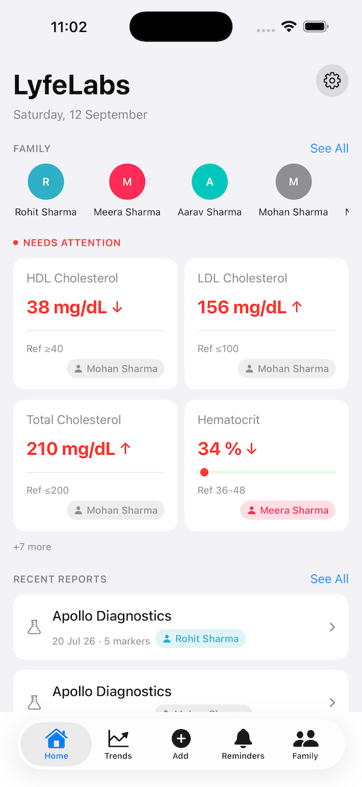
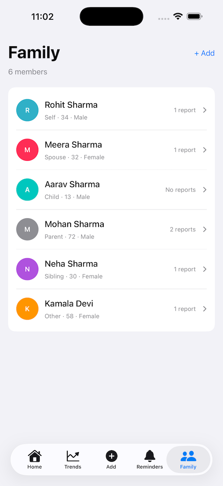
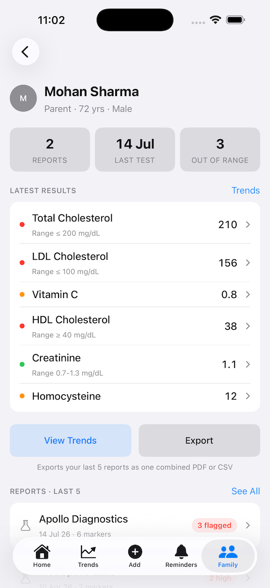

Blood test records for your whole family, kept on your device.
Lyfelabs keeps blood test results for everyone in a household in one place. You add a profile for each family member, enter the markers from each lab report, and the app charts how each value moves over time against its reference range. It can remind you when a repeat test is due, and export any member's history as a PDF or CSV to take to a doctor.
Everything is stored on your device. There is no account to create and no Lyfelabs server. If you use iCloud, your records sync between your own devices through your own Apple Account and nowhere else.



Write to darshanraju.dev@gmail.com. Lyfelabs is built and supported by one person, and replies usually go out within two business days.
If you're reporting something going wrong, these three details save a round trip: your iPhone model, your iOS version, and what you were doing just before it happened. Please don't send lab values or health details — they aren't needed to fix a bug, and support email isn't a secure channel for them.
Lyfelabs records and charts results you enter yourself. It doesn't diagnose anything and isn't a substitute for talking to a doctor about your results. Reference ranges shown in the app are general values and vary between laboratories.
On your device, in the app's own storage. The developer has no server and no access to anything you enter. When iCloud is active on your device, your records also sync through your private Apple Account storage, which the developer likewise cannot read. Full detail is in the privacy policy.
From the family list, tap the add button and fill in a name, date of birth, sex, and relationship. Date of birth and sex matter because several markers have different reference ranges depending on them. Each member gets a colour so their line is easy to pick out on a shared chart.
Open the member, add a report, and set the test date and lab name. Then add each marker from the printout with its value. Markers you don't have results for can simply be left out — a report doesn't need to be complete to be charted.
Add it as a custom marker with its own name and unit. It is entered, stored, and charted over time exactly like a built-in one.
The one difference is that custom markers have no reference range, because there isn't a standard one to apply. Their values are shown and charted as plain numbers, with no normal band on the chart and no high or low flagging. Your lab's printed range stays the thing to read them against.
If a marker you use regularly is missing from the built-in catalogue, email its name, unit, and typical reference range and it will be considered for a future update.
Units for the same marker vary between labs and countries — cholesterol in mg/dL or mmol/L, vitamin D in ng/mL or nmol/L. Pick the unit matching your report when entering the value, so the number is stored exactly as printed. Enter every result for a marker in the same unit, or the trend line won't be comparable across reports.
Automatically, if your device is signed in to an Apple Account with iCloud Drive turned on. Your records then sync between your iPhone and iPad, and any other device signed in to that same account, with nothing to set up. Lyfelabs tells you this the first time you open it, so the behaviour isn't a surprise.
There is no sync switch inside Lyfelabs — the app follows your device's iCloud settings. The Settings screen shows the current status so you can tell whether syncing is active. To stop it, turn off iCloud Drive for Lyfelabs in iOS Settings, or sign out of iCloud; your records then stay on the device.
Check two things first: both devices are signed in to the same Apple Account, and iCloud Drive is on in iOS Settings for Lyfelabs on both. The Settings screen in the app shows the current sync status, which is the quickest way to see which device is the problem. After that, give it a network connection and a minute — the first sync of a large history takes longer than later ones. Sync also pauses when a device is in Low Power Mode.
Reminders are local notifications, so they need notification permission. Check iOS Settings, Lyfelabs, Notifications, and confirm Allow Notifications is on. A Focus mode or Scheduled Summary can also hold notifications back until later — check whether Lyfelabs is allowed to break through your active Focus.
Reminders are set per family member, so a reminder you expect for one person won't appear under another. Open the member you're expecting the reminder for and confirm it is still scheduled there.
Open a member and choose export. PDF gives a readable summary with the trend charts, which is what most doctors want. CSV gives the raw values for a spreadsheet. Both are generated on your device and go into the standard iOS share sheet, so you decide where they go. Once shared, the file is an ordinary document containing health information — treat it like a printed report.
Delete a single report from the member's history, or delete a member to remove that person's reports and reminders with them. Deleting the app removes its local database from that device. If you used iCloud sync, also remove the app's data in iOS Settings under your Apple Account, iCloud, Manage Account Storage.
If iCloud syncing was active, reinstalling on a device signed in to the same Apple Account restores your history. If it wasn't — no iCloud Drive, or signed out — the records lived only on that device and deleting the app removes them. Before deleting, export a CSV for each member if you want a copy you control.
Not currently. Lyfelabs neither reads from nor writes to the Health app.